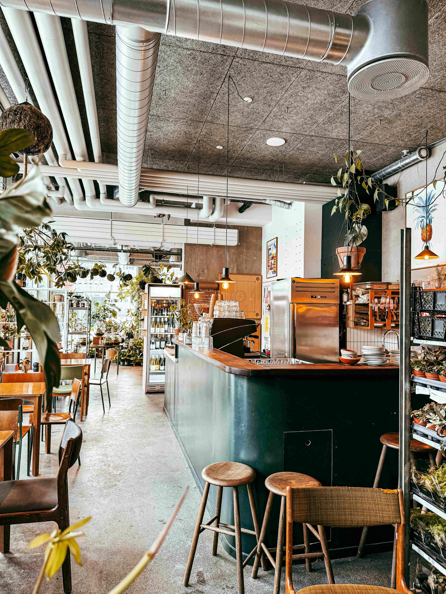
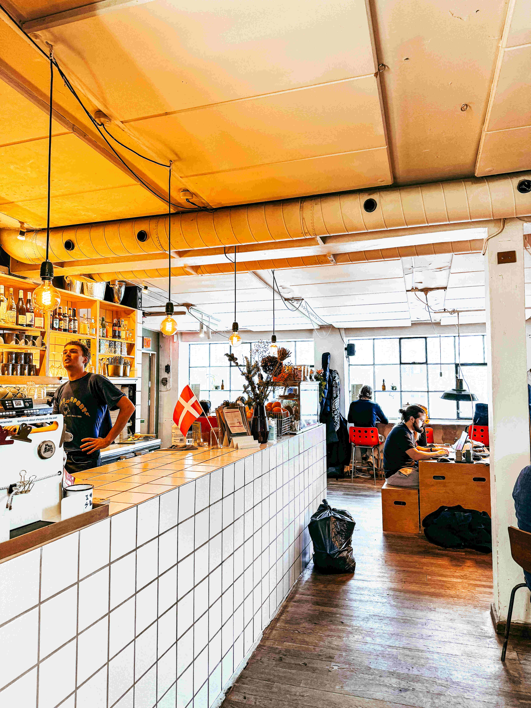
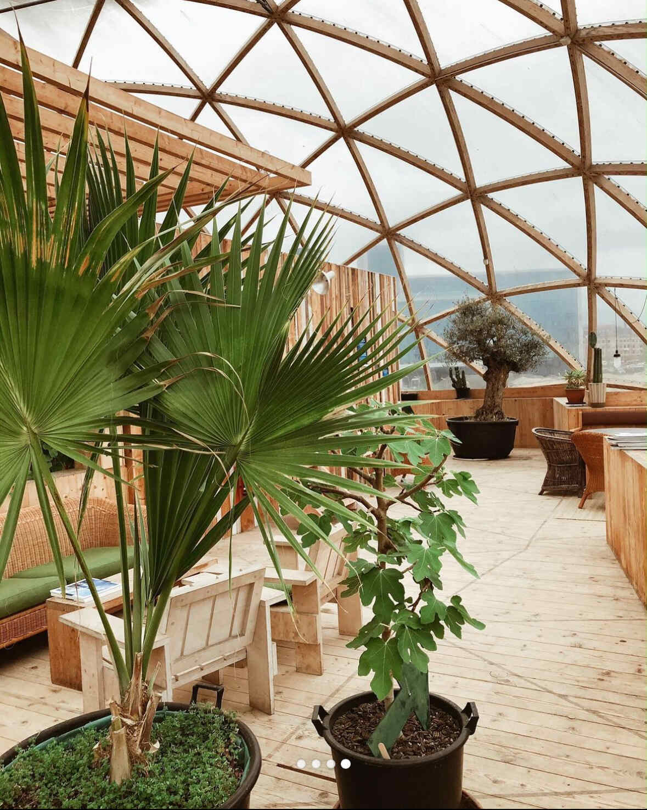

Hidden oases
where work, coffee & nature intertwine
These three spots are more than just cafés; they are hidden getaways right in the heart of Aarhus!
Plukk, LYNfabrikken & Domen might not ring a bell, but they are the secret ingredient for a perfect blend of work, coffee & nature.
In a city where go-to coffee places are to be found on every corner, these lesser-known spots are like hidden treasures, offering a feeling of escapism from the city hustle.


